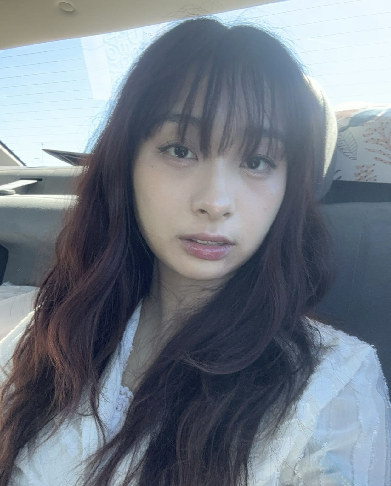

Hello, my name is Brieanne. I’m a Graphic Design and Media major at the University of Nevada, Las Vegas (UNLV), and my journey in design officially began in August 2022. Before transferring to UNLV, I earned an Associate of Arts degree from the College of Southern Nevada (CSN), where I built a strong foundation in visual communication and creative problem-solving.
In my courses, including GRC 250 and GRC 210, I’ve had the opportunity to design a variety of projects such as book covers, advertisements, restaurant menus, and logos. Each assignment challenged me to think critically about layout, typography, and audience, helping me develop a versatile design style.I’m drawn to creating designs that blend modern aesthetics with retro influences and the bold energy of pop art. Whether I’m working on print materials or digital media, I approach every project with enthusiasm and a commitment to craft visually engaging work.